class: center, middle, inverse # Isotope Identification ### 6th March 2019 --- ## Motivation - Ability to measure spectra in DosiMode yields a method to measure energy spectra of radioactive sources within a short duration - Use characteristic lines in a measured spectrum to predict the material of the source - Use Deep Learning approach utilizing a classifier to recognize different source as well as fluourescence materials --- ## MC Generation - Need MC data in order to train a network - Use mono-energetic detector responses for the DPX board with housing and water phantom (later get rid of the phantom and use the improved housing model if available) - Due to time issues, detector responses were only simulated for certain energies of the irradiated photon field. For broad spectra, it's sufficient to combine these spectra, but radioactive sources contain various sharp energies - Therefore, interpolate between spectra using bivariate spline approximation --- ## MC Generation - Interpolation Examples <p style="text-align:center;"> 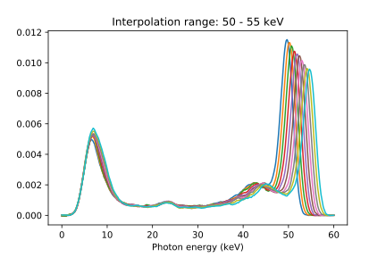 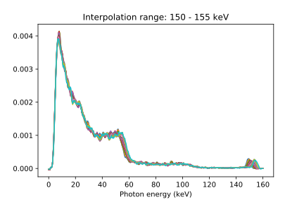 </p> --- ## MC Generation - Efficiency - Need efficency of detectors in order to get correct detector response in MC later - Take loglog of data and fit polynomial in order to get efficiency for arbitrary energy value <p style="text-align:center;"> 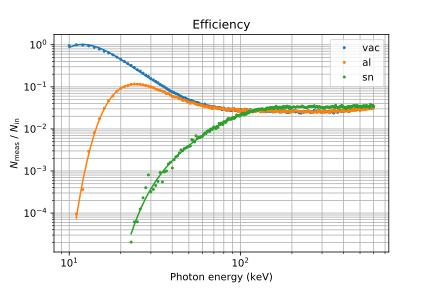 </p> --- ## MC Generation - Spectrum - Use database to get energies and intensities of a source or fluorescence material - Multiple parameters can be varied when generating spectra - `\(N_\mathrm{meas}\)` - number of counts - `\(Z\)` - filter material - `\(d\)` - thickness of filter - `\(\tau\)` - convolution parameter - `\(\sigma_\mathrm{gauss}\)` - standard deviation of Gaussian window to broaden spectrum via convolution - `\(f_\mathrm{noise}\)` - amount of noise applied to the spectrum - `\(d_\mathrm{SRC}\)` - thickness of source to estimate self-attenuation <p style="text-align:center;"> 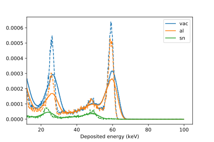 </p> --- ## MC Generation - Filtering and Self Attenuation - Apply filter of thickness `\(d\)` by calculating Beer-Lambert law for each intensity - photons pass the source material and have a certain probability to interact with it, leading to fluourescence photons - Assume decays take place homogeneously in the source - Estimate amount of absorption via `\(1 - \int_0^{d_\mathrm{SRC}} \mathrm dx\, e^{-\mu\rho x}\)` - Use absorbed intensity and intensities of fluorescence lines to calculate new intensities for each decay energy <p style="text-align:center;"> 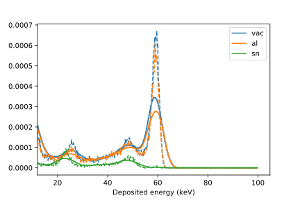 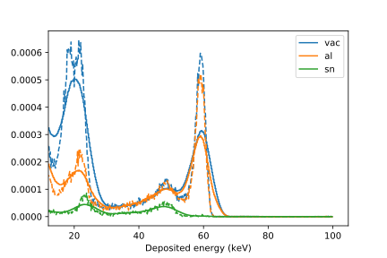 </p> --- ## Classifier - Input shape of (2, 440), only using vac and al detector atm - Encoder network with dense layers and dropout - `\(19.3\cdot 10^6\)` weights - ADAM optimizer with binary cross entropy loss, batch size of 64 - Multi-class classifier <p style="text-align:center;"> <img src="images/model.png" alt="model" width="1000px" align="middle"/> </p> --- ## Classifier - Training Data Density of Am241 and Ba133 training data <p style="text-align:center;"> 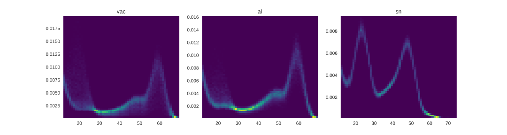 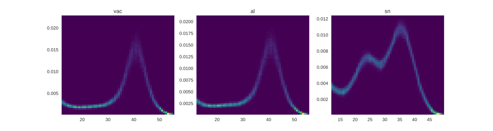 </p> --- ## Classifier - Training Training with dataset of 10k samples for 30 epochs <p style="text-align:center;"> <img src="images/loss.svg" alt="loss" width="450px" align="middle"/> 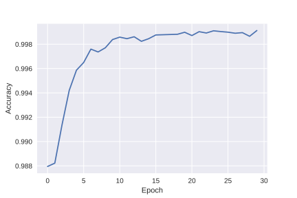 </p> --- ## Classifier - Prediction (Am241 MC) - MC Am241 at the input of the network - Multi-class discriminator output indicates ~100% Am241 <p style="text-align:center;"> 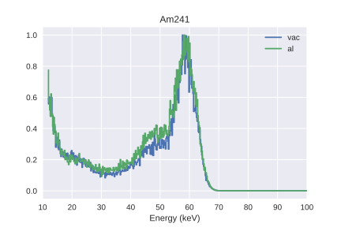 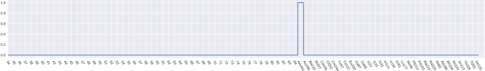 </p> --- ## Classifier - Confusion Matrix <p style="text-align:center;"> 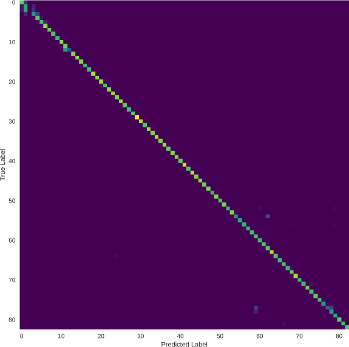 </p> --- ## Classifier - Real Data Measurements with various radioactive sources for short durations (2 minutes) <p style="text-align:center;"> 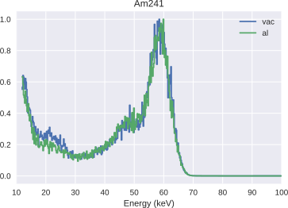 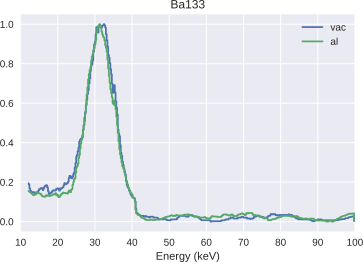 </p> <p style="text-align:center;"> 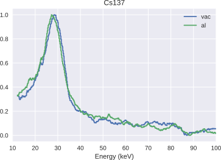 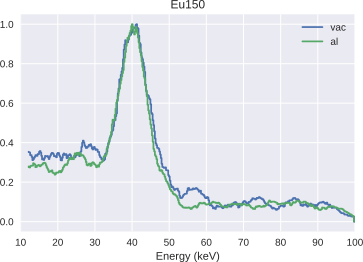 </p> --- ## Classifier - Predictions - From top to bottom: Am241, Ba133, Cs137, Eu150 - Am241 and Eu150 are classified, Ba133 is identified as Z=56, Cs137 is classified as I123 <p style="text-align:center;"> 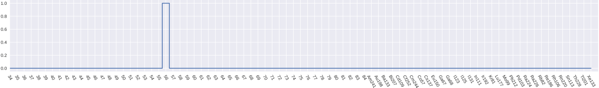 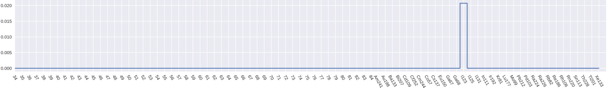 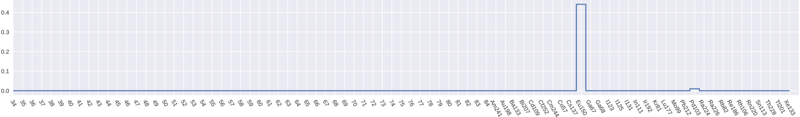 </p> --- ## Classifier - Misclassification - Left: Cs137 measurement, Right: I123 simulation - They look similar, therefore hart to discriminate - For the future: - Extend energy range in order to improve classification power - Optimize randomly set parameters of spectrum generator to better fit reality - Modify training data to include mixed datasets <p style="text-align:center;"> 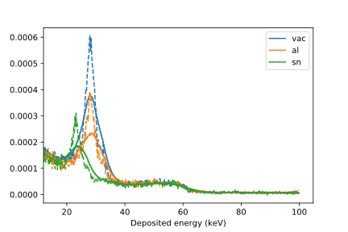 </p>